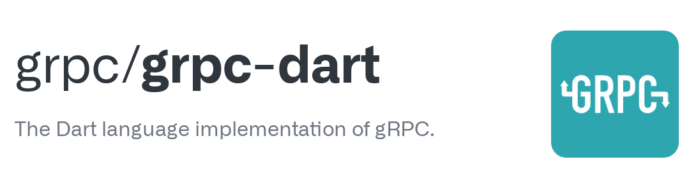
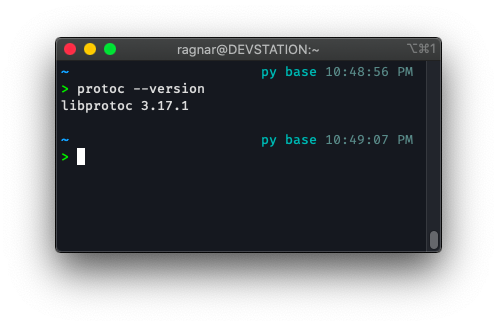
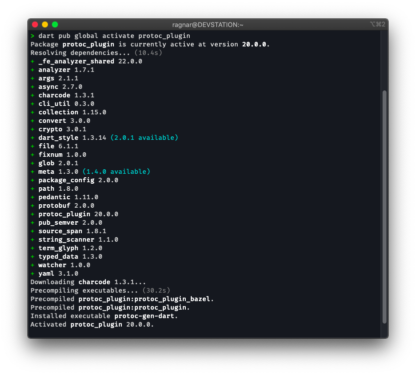
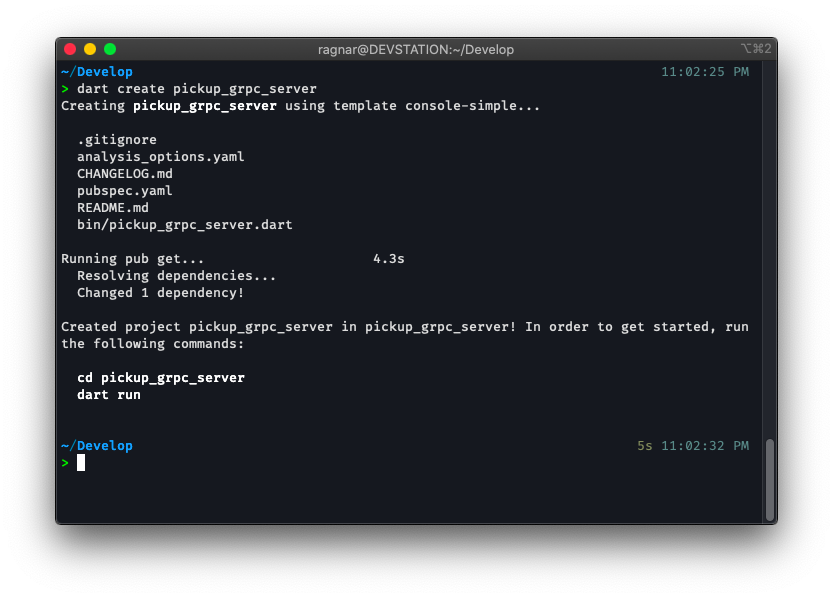
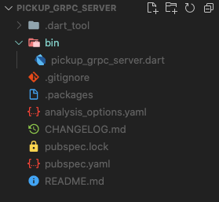
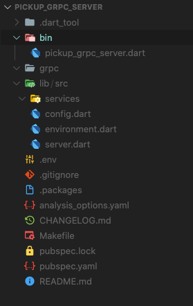
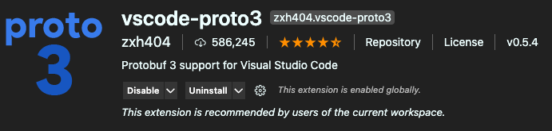
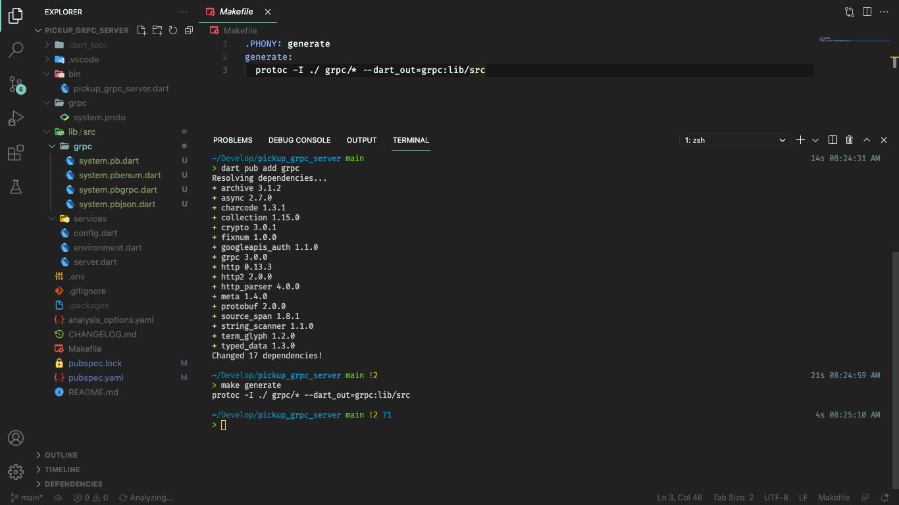
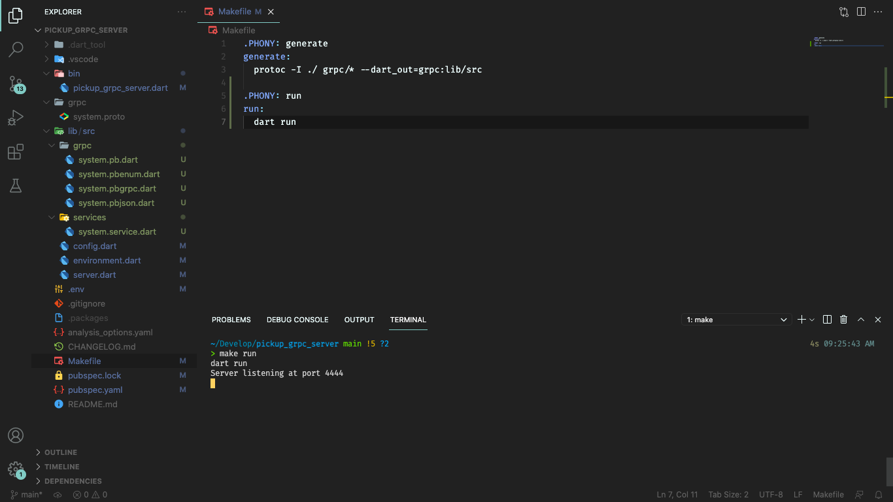
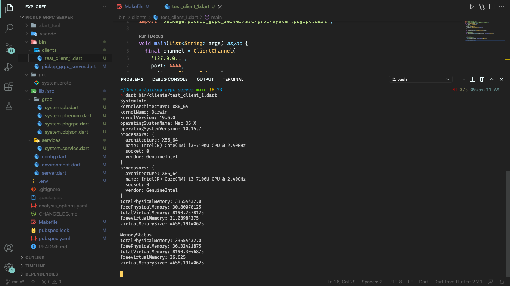

Usando Dart en Backend y Frontend con gRPC🔗
13 de junio de 2021
Lo primero, "el problema" 😉🔗
Pues esta vez no partiremos de un problema sino mas bien de un deseo. A todo desarrollador le gusta la idea de poder programar todo lo que pueda utilizando un solo lenguaje. La búsqueda de un lenguaje "full stack" con el que puedas hacer de todo es comparable con la búsqueda de la "teoría fundamental de la física", donde los físicos buscan una teoría que les permita unificar la teoría de la relatividad y la teoría cuántica, los programadores buscan un lenguaje que les permita desarrollar backend y frontend sin tener que cambiarse el chip mental de un lenguaje a otro.
Durante un tiempo estuve programando en NodeJS y React y sentí esa sensación de haber encontrado en Javascript ese lenguaje full stack que me permitía hacer de todo, sin embargo luego de comenzar a trabajar con Dart y Flutter me enamoré del lenguaje, Dart es simplemente elegante, lo veo como un híbrido que toma lo mejor de Javacript, C#, Java e incluso C++ y a pesar de que las mezclas no son buenas, pues esta mezcla si que ha salido bien. Flutter cada día crece más como framework para el desarrollo frontend tanto de aplicaciones móviles como aplicaciones web y se ve un futuro prometedor para el desarrollo de aplicaciones de escritorio; y Dart es bien conocido por ser un lenguaje multiplataforma que se puede utilizar tanto para desarrollar apps con Flutter como para desarrollar aplicaciones de consola y servicios web, sin embargo esta última característica no ha sido tan explotada.
¿Puede ser Dart el nuevo lenguaje full stack que estoy buscando?🔗
Pues una vez que comencé a tener dominio del lenguaje comencé a experimentar con él para el desarrollo de servicios web y la verdad es que la experiencia al principio fue lo típico del niño que tiene un juguete nuevo, pero a la hora de realizar proyectos reales no fue para nada gratificante. Carece de frameworks que faciliten el trabajo, muy poca documentación sobre tareas típicas de un backend como conectarse a una base de datos, el manejo de las peticiones HTTP se puede tornar complejo cuando intentas contruir una API REST para un proyecto del mundo real y mantener una API REST escrita en Dart puede volverse costoso en tiempo, esfuerzo y puede costarte unos cuantos pelos de la cabeza cuando te topas con un bug.
Sin embargo recientemente conocí a gRPC y mi idea sobre cómo se contruye un servicio web cambió por completo.

Veamos lo que dice la web oficial sobre gRPC:
En gRPC, una aplicación cliente puede llamar directamente a un método en una aplicación de servidor en una máquina diferente como si fuera un objeto local, lo que facilita la creación de aplicaciones y servicios distribuidos. Como en muchos sistemas RPC, gRPC se basa en la idea de definir un servicio, especificando los métodos que se pueden llamar de forma remota con sus parámetros y tipos de retorno. En el lado del servidor, el servidor implementa esta interfaz y ejecuta un servidor gRPC para manejar las llamadas de los clientes. En el lado del cliente, el cliente tiene un código auxiliar (denominado simplemente cliente en algunos idiomas) que proporciona los mismos métodos que el servidor.
Si usted entiende lo escrito anteriormente pues FELICITACIONES 🥳, porque yo no entendí nada cuando lo leí, así que fuí directamente a ver los ejemplos de código de cómo se implementaba esto; me encontré con que se podía implementar en distintos lenguajes; que tanto cliente como servidor podían estar implementados en lenguajes diferentes y comunicarse entre ellos, nada nuevo hasta ahora. Sin embargo noté que Dart se encontraba entre los lenguajes que se podía utilizar para implementar tanto servidor como cliente y vi una oportunidad de volver a probar con Dart para construir servicios web.
Conociendo más a gRPC🔗
Comencé a revisar código de ejemplos y los tutoriales de la web oficial y primeramente noto que todo el servicio se especifíca utilizando archivos .proto, donde se utiliza Protocol Buffers para definir primero los tipos de datos y los servicios y luego un compilador (transpilador) genera el código automáticamente tanto de cliente como de servidor para el lenguaje que escojas 🤯. Otra vez volví a sentir esa sensación de niño con juguete nuevo.
Noto también que no hay que definir urls, ni controladores, ni middlewares, solo defines tu servicio en .proto, generas para el lenguaje que desees, implementas los servicios en el servidor y en el cliente es solamente llamar a las funciones que ya ha generado protoc. Así que pensé 🤔:
"Esto es demasiado fácil de usar como para no usarlo. Esto me va a permitir usar Dart en el backend sin realizar practicamente ningún esfuerzo, y en las apps que implemente con Flutter es sólo llamar a las funciones, adios serialización de json y llamadas POST, GET, PUT, etc a urls distintas, es sólo llamar a una función"
gRPC además nos trae otras bondades como la utilización de HTTP/2 como protocolo de comunicación que permite una comunicación bidireccional y más efectiva; y al usar protobuf los datos entre cliente y servidor se envían en formato raw binario, disminuyendo el consumo de datos y la carga de la red.
Esta infromación la puedes leer en la web oficial, en este post mi intención es mostrarte cómo utilizar gRPC para desarrollar un servicio web completo para una aplicación real, que será utilizada en un proyecto real, del mundo real, para aportarle valor a un negocio real. Insisto en el término real porque es muy fácil usar una tecnología nueva creando una simple ToDo List y ya decir que esa tecnología es lo máximo, no me gusta hacer ese tipo de cosas, sino sirve para proyectos grandes pues simplemente no sirve.
Por la mediana complejidad del proyecto y la necesidad de ir explicando cada detalle iré dividiendo este post en varias partes, en esta primera parte comenzaremos por lo básico, partiremos desde la instalación de las herramientas necesarias hasta crear un primer servicio y conectar una app cliente (de consola en este caso) al servicio que hemos creado.
Terminó la charla, time to code 👨💻.🔗
Lo primero, instalar protoc🔗
Esto como siempre depende del sistema operativo que estés utilizando, las instrucciones de instalación puedes encontrarlas en la web oficial de gRPC.
- Linux, using apt or apt-get, for example:
$ sudo apt install -y protobuf-compiler
- MacOS, using Homebrew:
$ brew install protobuf
También puedes descargarte el último release desde Github
Una vez tienes protoc instalado y te asegures de que puedes ejecutarlo desde la consola:

Lo que debes hacer es instalar el plugin de protoc para Dart, por defecto ya viene con los plugins de C++, Java, C#, etc. Pero para Dart aún debemos instalar el plugin para este lenguaje:
$ dart pub global activate protoc_plugin

Por supuesto he asumido que ya tenías Dart o Flutter instalado y configurado en el PATH.
Crear proyecto de Dart🔗
dart create pickup_grpc_server
Lo que está despues de
createes el nombre del proyecto

Abres el proyecto con tu editor de código favorito (VSCode 😉) y debes tener una estuctura de archivos como esta:

Agregaremos unas carpetas más y archivos que utilizaremos luego a medida que vayamos implementando el sistema.
-
Primero una carpeta que llamaremos
grpcdonde irán los archivos.protoque definen nuestro servicio API. En muchos tutoriales que he visto e incluso en la documentación oficial nombran esta carpeta comoprotosel nombre de la carpeta no es realmente importante, puedes usar cualquiera sin embargo prefiero llamarle grpc porque luego ese mismo nombre se utiliza para localizar los archivos que son generados porprotoc. -
Una carpeta
lib/src/servicesdonde irá la implementación de nuestros servicios, con gRPC solamente nos preocupamos por implementar los servicios que se encargarán de obtener los datos y enviarlos al cliente a través de funciones simples del lenguaje, más adelante veremos cómo. -
Tres archivos:
lib/src/server.dart: donde irá el punto de entrada encargado de levantar el servidor gRPC.
lib/src/environment.dart: donde implementaremos una clase encargada de cargar el entorno de desarrollo o de producción, esta clase tendrá variables que almacenarán cosas como número del puerto en que corre el server, dirección de la base de datos que se va a utilizar, llaves secretas para encriptado de contraseñas, etc.
lib/src/config.dart: en este archivo implementaremos una función que se va a encargar de configurar todo el entorno y de la inyección de dependencias.
-
Un archivo
.env, el clásico.envque se utiliza para declarar variables de entorno, vamos a recordar que Dart puede ser compilado en un archivo autoejecutable, o sea al estilo C, que lo compilas y lo corres en cualquier sistema incluso si no tiene Dart instalado. Entonces usando este archivo.envnos aseguramos de poder cambiar algunos parámetros del sistema sin necesidad de modificar el código. -
Un archivo
Makefileserá utilizado para poder ejecutar el comando encargado de generar los archivos desde proto sin necesidad de estar escribiendo todo el comando completo, además de otros comandos de utilidad. Es más sencillo si automatizamos un poco usandomake.
Como puedes ver no nos tomaremos el diseño del sistema a la ligera ya que queremos construir algo que pueda ser escalable y sostenible en el tiempo. Queremos contruir un sistema robusto utilizando Dart como se haría con cualquier otro lenguaje y framework de renombre como ASP.NET, Django, Ruby on Rails, etc.
Esta sería la nueva estructura de archivos que nos va quedando.

Definiendo los servicios con protobuf.🔗
Para este proyecto iremos definiendo varios servicios en distintos archivos, pero como este es el primer post y aún no hemos visto nada de código para crear el server comenzaremos con algo básico y práctico. Implementaremos un servicio que nos devolverá información sobre el estado del sistema.
Para ello utilizaremos el paquete de Dart: system_info
$ dart pub add system_info
Y vamos a crear el archivo grpc/system.proto:
Si usas VSCode te recomiendo instalar la extensión
vscode-proto3

grpc/system.proto
syntax = "proto3";
message Status {
string kernelArchitecture = 1;
string kernelName = 2;
string kernelVersion = 3;
string operatingSystemName = 4;
string operatingSystemVersion = 5;
repeated Processor processors = 6;
double totalPhysicalMemory = 7;
double freePhysicalMemory = 8;
double totalVirtualMemory = 9;
double freeVirtualMemory = 10;
double virtualMemorySize = 11;
}
message Processor {
string architecture = 1;
string name = 2;
string socket = 3;
string vendor = 4;
}
Esto es lo primero que vamos a escribir en nuestro archivo .proto, comenzamos por definir los tipos de datos, en gRPC cada message que definimos será traducido en un tipo de clase del lenguaje que seleccionemos, los objetos de estas clases son los que almacenarán la información que se va a transmitir entre el servidor y el cliente, una analogía sería cuando definimos los modelos en una API REST usando un framework, en este caso los messages son nuestros modelos. En este caso en particular tenemos un message Status que contiene varios atributos de tipo string y double, algo que nos resulta completamente familiar, también tenemos un atributo de tipo repeated Processor, la palabra repeated se utiliza para representar arreglos o listas, y luego tenemos otro message Processor que básicamente almacena la infromación de un procesador y como podemos ver Status podrá contener información sobre varios procesadores.
Fíjese que cada instrucción debe terminar con el clásico ; y que a cada atributo se le asigna un número positivo, no es necesario que se asignen en orden aunque es recomendable, estos números son utilizados para la codificación y descodificación de los mensajes. A diferencia de json, protobuf no envía información sobre el nombre de los atributos sino que solo envía su número asignado y su valor, el código que se genera se encarga automaticamente de codificar y descodificar esta información. Tenga en cuenta esto ya que esto le permite cambiar fácilmente el nombre de cualquier campo sin que esto afecte el funcionamiento del sistema, sin embargo una vez que el sistema se encuentre en producción no podrá cambiar los valores numéricos asignados a cada campo.
Finalmente esta instrucción syntax = "proto3"; es solo para decir la versión de protobuf que queremos utilizar, hasta el momento de escribir este post proto3 es la última versión y recomendada.
Ahora pasaremos a definir el servicio que devolverá la información del sistema. Lo definimos dentro del mismo archivo:
grpc/system.proto
syntax = "proto3";
message Status {
string kernelArchitecture = 1;
string kernelName = 2;
string kernelVersion = 3;
string operatingSystemName = 4;
string operatingSystemVersion = 5;
repeated Processor processors = 6;
double totalPhysicalMemory = 7;
double freePhysicalMemory = 8;
double totalVirtualMemory = 9;
double freeVirtualMemory = 10;
double virtualMemorySize = 11;
}
message Processor {
string architecture = 1;
string name = 2;
string socket = 3;
string vendor = 4;
}
message Memory {
double totalPhysicalMemory = 7;
double freePhysicalMemory = 8;
double totalVirtualMemory = 9;
double freeVirtualMemory = 10;
double virtualMemorySize = 11;
}
service SystemService {
rpc getSystemInfo(NoParams) returns (Status);
rpc getMemoryStatus (NoParams) returns (Memory);
}
message NoParams {}
Decidí agregar otro message Memory para poder mostrar que un servicio puede contener más de una función o método. En este caso hemos definido el servicio SystemService que posee dos métodos, uno para obtener el estado general del sistema: getSystemInfo y otro para obtener solamente el estado de la memoria getMemoryStatus. La definición de cada método comienza con la palabra rpc seguida de su nombre y entre paréntesis el parámetro de la función que debe ser un message, si te fijas he tenido que definir otro message NoParams para poder especificar que estos métodos no van a recibir ningún parámetro; aquí no tenemos algo como void pero podemos declarar un message vacío para simularlo. Después viene la palabra returns y entre paréntesis especificamos el tipo de message que se va a devolver. Una vez más el ; está presente después de cada declaración y puedes ver que se utiliza service para definir un servicio algo similar a como mismo utilizamos class para definir una clase en la mayoria de los lenguajes de POO.
Ya con esto tenemos nuestro primer servicio definido, ahora es momento de generar el código para Dart e implementar el servicio, si te fijas esto solo define el servicio y los tipos de datos, aún nos falta implementar esas funciones y construir los objetos que tendrán esa información.
Traducir e implementar 🛠🔗
Una imagen dice más que las palabras.

- Instalar el paquete
grpc
$ dart pub add grpc
- Generar archivos para el lenguaje Dart:
Se utiliza este comando:
$ protoc -I ./ grpc/* --dart_out=grpc:lib/src
Pero lo que hemos hecho es poner esto en el archivo Makefile, para luego poder usar:
$ make generate
Y como se puede ver en la imagen se nos han generado cuatro archivos en la carpeta lib/src/grpc, el contenido de cada archivo no es relevante para nosotros, lo que debemos saber es que ahí se encuentra la implementación de los messages que hemos declarado en el archivo system.proto y la definición de el servicio SystemService, ahora nos corresponde implementar el servicio.
lib/src/services/system.service.dart
import 'package:grpc/src/server/call.dart';
import 'package:pickup_grpc_server/src/grpc/system.pbgrpc.dart';
import 'package:system_info/system_info.dart';
class SystemService extends SystemServiceBase {
final int MEGABYTE = 1024 * 1024;
@override
Future<Memory> getMemoryStatus(ServiceCall call, NoParams request) async {
return Memory(
totalPhysicalMemory: SysInfo.getTotalPhysicalMemory() / MEGABYTE,
freePhysicalMemory: SysInfo.getFreePhysicalMemory() / MEGABYTE,
totalVirtualMemory: SysInfo.getTotalVirtualMemory() / MEGABYTE,
freeVirtualMemory: SysInfo.getFreeVirtualMemory() / MEGABYTE,
virtualMemorySize: SysInfo.getVirtualMemorySize() / MEGABYTE,
);
}
@override
Future<Status> getSystemInfo(ServiceCall call, NoParams request) async {
return Status(
kernelArchitecture: SysInfo.kernelArchitecture,
kernelName: SysInfo.kernelName,
kernelVersion: SysInfo.kernelVersion,
operatingSystemName: SysInfo.operatingSystemName,
operatingSystemVersion: SysInfo.operatingSystemVersion,
processors: SysInfo.processors.map(
(p) => Processor(
architecture: p.architecture.name,
name: p.name,
socket: p.socket.toString(),
vendor: p.vendor,
),
),
totalPhysicalMemory: SysInfo.getTotalPhysicalMemory() / MEGABYTE,
freePhysicalMemory: SysInfo.getFreePhysicalMemory() / MEGABYTE,
totalVirtualMemory: SysInfo.getTotalVirtualMemory() / MEGABYTE,
freeVirtualMemory: SysInfo.getFreeVirtualMemory() / MEGABYTE,
virtualMemorySize: SysInfo.getVirtualMemorySize() / MEGABYTE,
);
}
}
Analizaremos esto rápidamente, hemos creado una clase SystemService que hereda de SystemServiceBase, la clase SystemServiceBase es una clase abstracta creada por protoc cuando generamos el código para Dart. Nuestra tarea en SystemService es implementar los métodos que ya hemos definido anteriormente en el archivo system.proto y que ahora han quedado definidos en la clase SystemServiceBase pero no han sido implementados. La implementación es básicamente retornar dentro de la función un objeto del tipo que hemos declarado con anterioridad que contenga la información que queremos enviar al cliente. Nada complicado, los "modelos" o messages que hemos declarado en el archivo .proto ya han sido implementados, solamente tenemos que usarlos para retornar la información deseada dentro de la función.
Y ya con esto hemos creado nuestro primer servicio, ahora es momento de configurar los parámetros para cargar el servidor. Primero vamos a agregar el paquete dotenv que nos va a permitir cargar las variables de entorno desde el archivo .env y vamos a implementar otra clases que utilizaremos para la configuración del sistema.
Configurar y cargar el servidor🔗
Primeramente escribiremos el código que nos va a permitir configurar el sistema de una manera más elegante utilizando las variables de entorno, ya que es un código básico de configuración del sistema me limitaré solo a mostrarlo y luego pasamos a la explicación de cómo cargar el servidor gRPC.
$ dart pub add dotenv
.env
PORT=4444
lib/src/environment.dart
import 'package:dotenv/dotenv.dart' show load, env;
class Environment {
final int PORT;
Environment({
required this.PORT,
});
factory Environment.development() {
load();
return Environment(
PORT: int.parse(env['PORT'] ?? '9000'),
);
}
factory Environment.production() {
load();
return Environment(
PORT: int.parse(env['PORT'] ?? '9000'),
);
}
}
Por ahora la única variable de entorno que necesitamos es para especificar el puerto por el que va a escuchar nuestro servidor.
$ dart pub add get_it
lib/src/config.dart
import 'package:get_it/get_it.dart';
import 'environment.dart';
Future<void> setup() async {
final getIt = GetIt.instance;
final environment = Environment.development();
getIt.registerSingleton<Environment>(
environment,
);
}
Básicamente realizar inyección de dependencias, en este caso solamente seleccionamos el entorno y registramos un singleton utilizando get_it
Momento de unir todo y cargar el servidor.
lib/src/server.dart
import 'package:get_it/get_it.dart';
import 'package:grpc/grpc.dart' as grpc;
import 'package:pickup_grpc_server/src/services/system.service.dart';
import 'config.dart';
import 'environment.dart';
class Server {
static late Environment environment;
static Future<void> init() async {
await setup();
environment = GetIt.I<Environment>();
final server = grpc.Server([
SystemService(),
]);
await server.serve(port: environment.PORT);
print('Server listening at port ${server.port}');
}
}
Ahora si toca explicar un poco. Creamos una clase Server que contiene un método init y un atributo de tipo Environment, dentro el método init primero llamamos a la función setup que definimos en el archivo lib/src/config.dart para que registre el entorno. Usted puede decir ahora: "Bueno pero hubiera sido más rápido cargar directamente el entorno dentro de la función", y tiene toda la razón, pero es probable que luego dentro de esa misma clase Environment tenga otras variables de entorno a las que quiera acceder luego en otros archivos y en ese caso si es mucho más eficiente tener un solo objeto de tipo Environment cargado en memoria al que puede acceder en cualquier momento desde cualquier parte de su código.
Una vez hemos realizado la "inyección de dependencias" pues obtenemos el environment con GetIt.I<Environment>();, y por fin declaramos nuestro server. Tan simple como se vé es solo crear un objeto de tipo Server (fíjese que es Server del paquete grpc, ya que le hemos puesto a nuestra clase ese mismo nombre hay que diferenciarlos específicando el paquete que contiene a la clase). Al constructor de grpc.Server le damos como parámetro una lista de servicios, en este caso sólo hemos definido un servicio: SystemService. Y luego lo que queda es mandarlo a escuchar en el puerto que ha sido especificado en el entorno y mostramos un mensaje para saber que todo marcha bien y el servidor ya está escuchando en el puerto especificado.
Un último ajuste y ya tenemos al servidor corriendo:
bin/pickup_grpc_server.dart
import 'package:pickup_grpc_server/src/server.dart';
void main(List<String> arguments) async {
await Server.init();
}
LISTO

Mientras tanto... Del lado del cliente 📺🔗
Ahora vamos a crear un cliente sencillo que se va a conectar a nuestro servidor para obtener información sobre el sistema.
bin/clients/test_client_1.dart
import 'package:grpc/grpc.dart';
import 'package:pickup_grpc_server/src/grpc/system.pbgrpc.dart';
void main(List<String> args) async {
final channel = ClientChannel(
'127.0.0.1',
port: 4444,
options: ChannelOptions(
credentials: ChannelCredentials.insecure(),
),
);
final systemServiceClient = SystemServiceClient(channel);
// SystemInfo
print('SystemInfo');
final resultSystemInfo = await systemServiceClient.getSystemInfo(NoParams());
print(resultSystemInfo);
// MemoryStatus
print('MemoryStatus');
final resultMemoryStatus =
await systemServiceClient.getMemoryStatus(NoParams());
print(resultMemoryStatus);
}
Comenzamos por definir un canal, en un canal se especifica la dirección IP del servidor (localhost en este caso), el puerto (4444), y el tipo de credenciales esto depende de como hayamos configurado el servidor por ejemplo podemos usar un certificado TLS, y para acceder a los servicios gRPC de Google se debe configurar un mecanismo de OAuth, en nuestro caso no tenemos credenciales de ningún tipo así que decimos que es ChannelCredentials.insecure().
Y luego viene la "magia", la clase SystemServiceClient ya fue implementada cuando generamos el código usando protoc es solo crear una instancia de esta clase y pasarle a través del constructor el canal que vamos a utilizar. Para obtener la información de cada método del servicio es simplemente llamar a la función correspondiente, que nos retornará un objeto del mismo tipo que hemos declarado, un objeto real de una clase del lenguaje, adios json, toJson, fromJson, adios peticiones de tipo GET, POST, PUT, DELETE. Simplemente llamar a una función, como si esa función estuviera corriendo en mi aplicación cliente que es la esencia de las API RPC, solo que con gRPC llegamos a otro nivel.
I love this

Y con esto ya tienes básicamente todo lo que necesitas saber para usar gRPC con Dart tanto en el backend cómo en el frontend. Pero sucede que crear un backend no es solamente llamar a unas funciones y retornar objetos (bueno en realidad sí pero aún faltan cosas por hacer), todavía debemos ver cómo almacenar datos en una base de datos, cómo implemetar autenticación, cómo encryptar las contraseñas de los usuarios para no guardarlas en texto plano dentro de la base de datos. Este tipo de cosas normalmente se hacen con facilidad utilizando frameworks de otros lenguajes, pero ahora que gRPC nos ahorra muchísimo tiempo en la construcción de nuestros servicios web podemos dedicarle tiempo a implementar estas otras funcionalidades, en los próximos posts te mostraré cómo implementar un crud para guardar y manejar la información de los usuarios del sistema utilizando una base de datos.
Hasta entonces "sigue el gradiente de la curiosidad". 👨💻 Happy Coding.
La tecnología que cambia el mundo generalmente no parece muy impresionante en su primera iteración, simplemente "intrigante". Suceden cosas buenas cuando sigues el gradiente de la curiosidad.
Url del proyecto en Github: https://github.com/correaleyval/pickup_grpc_server